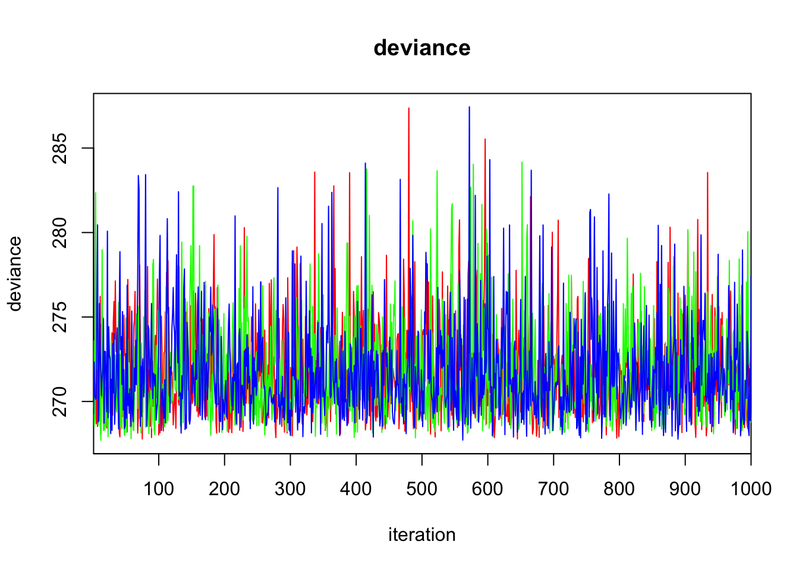

[Manual]Using Jags and R2jags in R
This post is aimed to introduce the basics of using jags in R programming. Jags is a frequently used program for conducting Bayesian statistics.Most of information below is borrowed from Jeromy Anglim’s Blog. I will keep editing this post if I found more resources about jags.
1 What is JAGS?
JAGS stands for Just Another Gibbs Sampler. To quote the program author, Martyn Plummer, “It is a program for analysis of Bayesian hierarchical models using Markov Chain Monte Carlo (MCMC) simulation…” It uses a dialect of the BUGS language, similar but a little different to OpenBUGS and WinBUGS.
2 Installation
To run jags with R, There is an interface with R called rjags. 1. Download and install Jags based on your operating system. 2. Install additional R packages: type install.packages(c(“rjags”,”coda”)) in R console. rjags is to interface with JAGS and coda is to process MCMC output.
3 JAGS Examples
There are a lot of examples online. The following provides links or simple codes to JAGS code.
- Justin Esarey
- An entire course on Bayesian Statistics with examples in R and JAGS. It includes 10 lectures and each lecture lasts around 2 hours. The content is designed for a social science audience and it includes a syllabus linking with Simon Jackman’s text. The videos are linked from above or available direclty on YouTube.
- Jeromy Anglim
- The author of this blog also provides a few examples. He shared the codes on his github account
- John Myles White
- A course on statistical models that is under development with JAGS scripts on github.
- Simple introductory examples of fitting a normal distribution, linear regression, and logistic regression
- A follow-up post demonstrating the use of the coda package with rjags to perform MCMC diagnostics.
- A simple simulation sample:
First, simulate the Data:
Next, we create the outcome y based on coefficients b_1 and b_2 for the respective predictors and an intercept a:
b1 <- 1.2
b2 <- -3.1
a <- 1.5
y <- b1*x1 + b2*x2 + eNow, we combine the variables into one dataframe for processing later:
sim.dat <- data.frame(y, x1, x2)And we create and summarize a (frequentist) linear model fit on these data:
Call:
lm(formula = y ~ x1 + x2, data = sim.dat)
Residuals:
Min 1Q Median 3Q Max
-1.3432 -0.6797 -0.1112 0.5367 3.2304
Coefficients:
Estimate Std. Error t value Pr(>|t|)
(Intercept) 0.34949 0.28810 1.213 0.228
x1 1.13511 0.05158 22.005 <2e-16 ***
x2 -3.09361 0.20650 -14.981 <2e-16 ***
---
Signif. codes: 0 '***' 0.001 '**' 0.01 '*' 0.05 '.' 0.1 ' ' 1
Residual standard error: 0.9367 on 97 degrees of freedom
Multiple R-squared: 0.8772, Adjusted R-squared: 0.8747
F-statistic: 346.5 on 2 and 97 DF, p-value: < 2.2e-163.1 Beyesian Model
Now define the vectors of the data matrix for JAGS:
y <- sim.dat$y
x1 <- sim.dat$x1
x2 <- sim.dat$x2
N <- nrow(sim.dat)Read in the data frame for JAGS
sim.dat.jags <- list("y", "x1", "x2", "N")Define the parameters whose posterior distributions you are interested in summarizing later:
bayes.mod.params <- c("alpha", "beta1", "beta2")Setting up starting values
bayes.mod.inits <- function(){
list("alpha" = rnorm(1), "beta1" = rnorm(1), "beta2" = rnorm(1))
}
# inits1 <- list("alpha" = 0, "beta1" = 0, "beta2" = 0)
# inits2 <- list("alpha" = 1, "beta1" = 1, "beta2" = 1)
# inits3 <- list("alpha" = -1, "beta1" = -1, "beta2" = -1)
# bayes.mod.inits <- list(inits1, inits2, inits3)3.2 Fitting the model
set.seed(123)
bayes.mod.fit <- jags(data = sim.dat.jags, inits = bayes.mod.inits,
parameters.to.save = bayes.mod.params, n.chains = 3, n.iter = 9000,
n.burnin = 1000, model.file = bayes.mod)module glm loadedCompiling model graph
Resolving undeclared variables
Allocating nodes
Graph information:
Observed stochastic nodes: 100
Unobserved stochastic nodes: 4
Total graph size: 511
Initializing model3.3 Diagnostics
print(bayes.mod.fit)Inference for Bugs model at "/var/folders/9t/ryz7lf_s7ts720p_lwdttfhm0000gn/T//RtmpaqCD4J/modelc9a07e55a3b4.txt", fit using jags,
3 chains, each with 9000 iterations (first 1000 discarded), n.thin = 8
n.sims = 3000 iterations saved
mu.vect sd.vect 2.5% 25% 50% 75% 97.5% Rhat n.eff
alpha 0.362 0.293 -0.205 0.166 0.358 0.562 0.958 1.009 250
beta1 1.133 0.053 1.025 1.099 1.134 1.169 1.236 1.009 250
beta2 -3.090 0.205 -3.496 -3.231 -3.090 -2.950 -2.685 1.002 1700
deviance 271.830 2.899 268.167 269.718 271.122 273.198 279.223 1.000 3000
For each parameter, n.eff is a crude measure of effective sample size,
and Rhat is the potential scale reduction factor (at convergence, Rhat=1).
DIC info (using the rule, pD = var(deviance)/2)
pD = 4.2 and DIC = 276.0
DIC is an estimate of expected predictive error (lower deviance is better).plot(bayes.mod.fit)
traceplot(bayes.mod.fit)